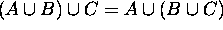
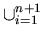
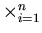
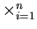
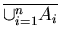
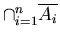
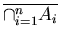
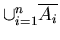

Set
Generalized Set Operations
Subjects to be Learned
- generalized set union
- generalized set intersection
- generalized Cartesian product
- generalized De Morgan's Rules
Contents
As we saw earlier, union, intersection and Cartesian product of sets are
associative.
For example 
To denote either of these we often use
A
B
C .
This can be generalized for the union of any finite number of sets as
A1
A2
....
An ,
which we write as
 Ai
Ai
This generalized union of sets can be rigorously defined as follows:
Definition (
Ai) :
Basis Clause: For n = 1 ,
Ai
= A1.
Inductive Clause:

Ai = (
Ai)
An+1
Similarly the generalized intersection  Ai and generalized Cartesian product

Ai can be defined.
Ai and generalized Cartesian product

Ai can be defined.
Based on these definitions, De Morgan's law on set union and intersection can
also be generalized as follows:
Theorem (Generalized De Morgan)

=
 ,
and

=

Proof:
These can be proven by induction on n and are left as an exercise.
Next -- Recursive Definition of Functions
Back to Schedule
Back to Table of Contents